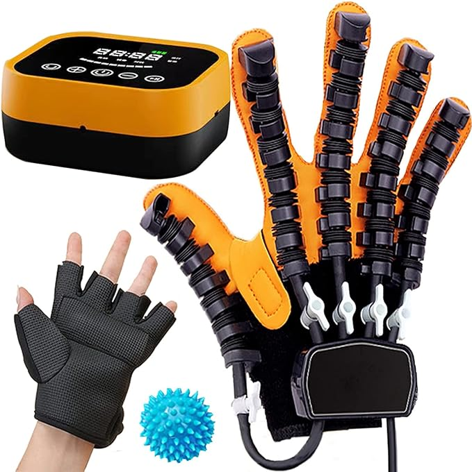
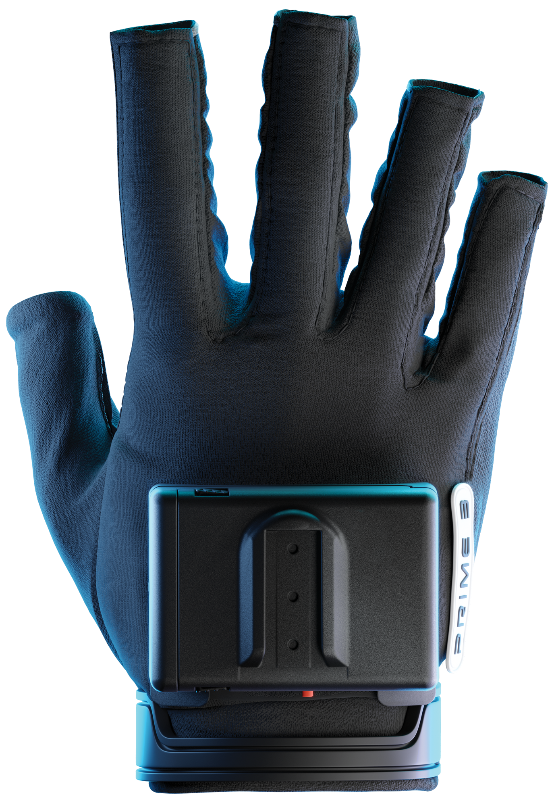
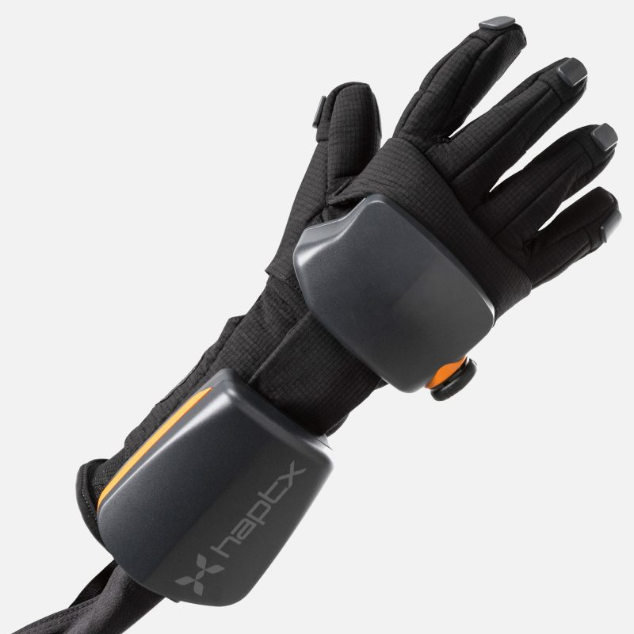
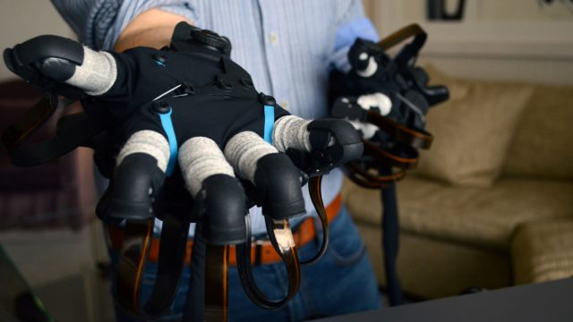

<div class="textcontainer">
<p class="margin"> </p>
<h2><strong> 1: Final Project Proposal</strong></h2>
<p class="margin"> </p>
<h4>Idea: Haptic VR Wearables</h4>
<p class="margin"> </p>
Currently, I am channeling my efforts into a singular, yet innovative final project idea.
The concept revolves around developing VR (Virtual Reality) gloves equipped with haptic feedback.
The aim of these gloves is to enhance the VR experience by providing users with tactile sensations,
allowing them to feel and interact with virtual objects and environments in a more immersive manner.
<p class="margin"> </p>
The primary functionality of these gloves is to deliver a realistic sense of touch, particularly
beneficial in activities like 3D modeling or virtual designing, where tactile feedback can significantly
improve user interaction. The project would involve integrating sophisticated haptic mechanisms within the gloves,
such as vibration motors or advanced pressure systems, ensuring the gloves are not only effective in feedback
delivery but also comfortable and intuitive for prolonged use.
<p class="margin"> </p>
Additionally, a key component of this project would be developing a compatible application in Unity. This
application would be responsible for translating the user's hand movements into corresponding virtual actions,
thereby creating a seamless bridge between the user's physical and virtual interactions.
<p class="margin"> </p>
While my current focus is on VR gloves, I am also open to exploring other wearable technologies that could serve
as feedback instruments for VR users. This could include items like haptic vests, interactive footwear, or even
headbands that respond to VR environments. The overarching goal is to enrich the VR experience by introducing
wearables that bring a heightened level of realism and immersion.
<p class="margin"> </p>
In essence, this project aims not only to push the boundaries of current VR technology but also to explore the
vast potential of wearable tech in creating more interactive and engaging virtual experiences.
<p class="margin"> </p>
<em>References and Inspiration</em>
<p class="margin"> </p>
[bHaptics TactGlove DK1](https://www.knoxlabs.com/products/bhaptics-tactglove-dk1-haptic-gloves?variant=45661482615104¤cy=USD&utm_medium=product_sync&utm_source=google&utm_content=sag_organic&utm_campaign=sag_organic&gclid=CjwKCAiAk9itBhASEiwA1my_65jE0cSYQNQLiCswWpT8vfXQRz0HNmyd0HUqV2mee7cKfywtWI_YVRoC9DIQAvD_BwE) /
/ [Manus Prime 3 Haptic XR](https://www.manus-meta.com/products/prime-3-haptic-xr)
/ [HaptX's VR Glove](https://www.roadtovr.com/haptx-vr-force-feedback-glove-touching-the-virtual-world/)
/ Various VR gloves [1](https://www.youtube.com/watch?v=ZTzn37Usa-U) [2](https://www.amazon.com/Good1Lu-Rehabilitation-Equipment-Exerciser-Chargeable/dp/B0BV1Y2N8Q/ref=asc_df_B0BV1Y2N8Q/?tag=hyprod-20&linkCode=df0&hvadid=679139099034&hvpos=&hvnetw=g&hvrand=8204753784997193823&hvpone=&hvptwo=&hvqmt=&hvdev=c&hvdvcmdl=&hvlocint=&hvlocphy=9002004&hvtargid=pla-2269177464234&mcid=f3eebb99bf5a340f9683406512ae10bb&th=1)
<iframe width="100%" height="315" src="https://www.youtube.com/embed/nj_lvxrzuZ0?si=VwIEuwVW0yC-85Gn" title="YouTube video player" frameborder="0" allow="accelerometer; autoplay; clipboard-write; encrypted-media; gyroscope; picture-in-picture; web-share" allowfullscreen></iframe>
<div id="carouselFinalproposal" class="carousel slide" data-bs-ride="carousel">
<div class="carousel-indicators">
<button type="button" data-bs-target="#carouselFinalproposal" data-bs-slide-to="0" class="active" aria-current="true" aria-label="Slide 1"></button>
<button type="button" data-bs-target="#carouselFinalproposal" data-bs-slide-to="1" aria-label="Slide 2"></button>
<button type="button" data-bs-target="#carouselFinalproposal" data-bs-slide-to="2" aria-label="Slide 3"></button>
<button type="button" data-bs-target="#carouselFinalproposal" data-bs-slide-to="3" aria-label="Slide 4"></button>
</div>
<div class="carousel-inner">
<div class="carousel-item active">

</div>
<div class="carousel-item">

</div>
<div class="carousel-item">

</div>
<div class="carousel-item">

</div>
</div>
<button class="carousel-control-prev" type="button" data-bs-target="#carouselFinalproposal" data-bs-slide="prev">
<span class="carousel-control-prev-icon" aria-hidden="true"></span>
<span class="visually-hidden">Previous</span>
</button>
<button class="carousel-control-next" type="button" data-bs-target="#carouselFinalproposal" data-bs-slide="next">
<span class="carousel-control-next-icon" aria-hidden="true"></span>
<span class="visually-hidden">Next</span>
</button>
</div>
</div>